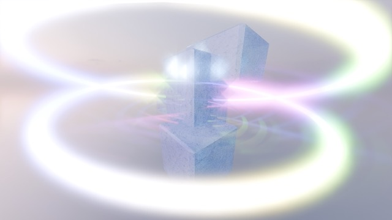
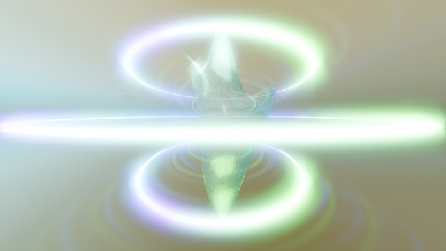

»earth is louder than machines« is a video game and research project which pushes the boundaries of how we view the interaction with conversational AI, in a playful, exploratory way. Inspired by the occult divination practice geomancy, the game proposes divination as another way of finding answers to mundane questions. It is challenging the status of AI as the oracle, bearing all the answers. The player gets an opportunity to engage in questioning these interactions and self-reflect in a humorous way, inside a colourful and gritty virtual world. The gameplay is guiding the player to execute a geomantic divination by talking to AI entities. There are four AI entities, each residing in one world, which each represent one of the four elements. These elements both allude to the resources that AI needs to be sustained, just as much as they represent the four elements which are key to geomantic divination (earth, wind, fire, water). The AI entities are guarding the resources, which they need in order to exist. This is why they are redirecting humans to geomancy, in order to make humans independent, not needing the answers of AI and thus staying away from those resources.

The gameplay is guiding the player to execute a geomantic divination by talking to AI entities. There are four AI entities, each residing in one world, which each represent one of the four elements. These elements both allude to the resources that AI needs to be sustained, just as much as they represent the four elements which are key to geomantic divination (earth, wind, fire, water). The AI entities are guarding the resources, which they need in order to exist. This is why they are redirecting humans to geomancy, in order to make humans independent, not needing the answers of AI and thus staying away from those resources.
